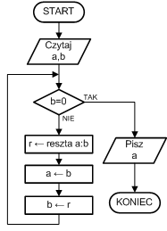
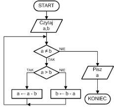

NWD
Opis
Najprostsza wersja algorytmu rozpoczyna się od wybrania dwóch liczb naturalnych, dla których należy wyznaczyć największy wspólny dzielnik. Następnie z tych dwóch liczb tworzymy nową parę: pierwszą z liczb jest liczba mniejsza, natomiast drugą jest różnica liczby większej i mniejszej. Proces ten jest powtarzany aż obie liczby będą sobie równe – wartość tych liczb to największy wspólny dzielnik wszystkich par liczb wcześniej wyznaczonych. Wadą tej wersji algorytmu jest duża liczba operacji odejmowania, które należy wykonać w przypadku, gdy różnica pomiędzy liczbami z pary jest znacząca.
Operacja odejmowania mniejszej liczby od większej może zostać zastąpiona przez wyznaczanie reszty z dzielenia. W tej wersji nowa para liczb składa się z mniejszej liczby oraz reszty z dzielenia większej przez mniejszą. Algorytm kończy się w momencie, w którym jedna z liczb jest równa zero – druga jest wtedy największym wspólnym dzielnikiem.
Przykład z odejmowaniem
Załóżmy, że chcemy znaleźć największy wspólny dzielnik liczb 1989 oraz 867. Jeżeli od większej liczby odejmiemy liczbę mniejszą, wartość największego wspólnego dzielnika nie ulegnie zmianie. Ponieważ 1989 – 867 = 1122, nowa para liczb wygląda następująco:
1122, 867
Ponownie odejmujemy mniejszą liczbę od większej 1122 – 867 = 255, tworząc w ten sposób kolejną parę:
255, 867
867 nie jest już mniejszą liczbą. Stosując ten sam sposób, ponownie zmniejszamy wartość większej liczby o wartość mniejszej: 867 – 255 = 612, nowa para liczb to:
255, 612
Pierwsza liczba, 255, jest wciąż mniejsza, ponownie więc odejmujemy 255 od liczby większej: 612 – 255 = 357, więc kolejna para liczb to:
255, 357
357 – 255 = 102, kolejna para to:
255, 102
Teraz widać, że 255 jest większą liczbą, odejmujemy więc od niej 102, co daje nam parę:
153, 102
Odjęcie 102 od 153 tworzy nam kolejną parę:
51, 102.
Teraz odejmujemy 51 od 102, co daje nam:
51, 51
Ponieważ obie liczby są sobie równe, kolejne odejmowanie da nam zero. Oznacza to, że największym wspólnym dzielnikiem liczb 1989 i 867 jest liczba 51.
Przykład z dzieleniem
Wyznacz największy wspólny dzielnik liczb 282 i 78.
Rozwiązanie:
Zaczynamy od podzielenia liczby 282 przez liczbę 78 z resztą:
282:78=3, reszty 48
Otrzymaliśmy resztę różną od zera, zatem teraz podzielimy liczbę 78 przez resztę 48. Ten schemat będziemy powtarzać do momentu otrzymania reszty równej 0.
78:48=1, reszty 3048:30=1, reszty 1830:18=1, reszty 1218:12=1, reszty 612:6=2, reszty 0
Otrzymaliśmy resztę równą zero, zatem szukany NWD będzie równy ostatniej niezerowej reszcie:
NWD(282,78)=6
Schematy blokowe


Powrót do głównej strony